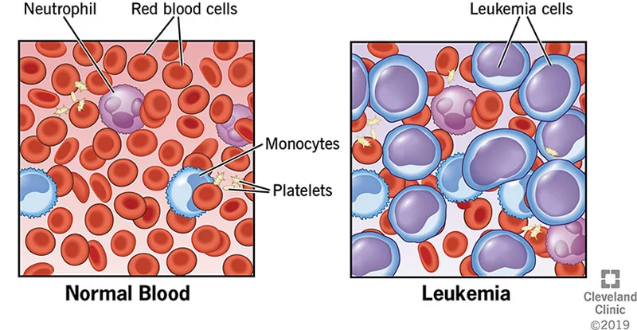
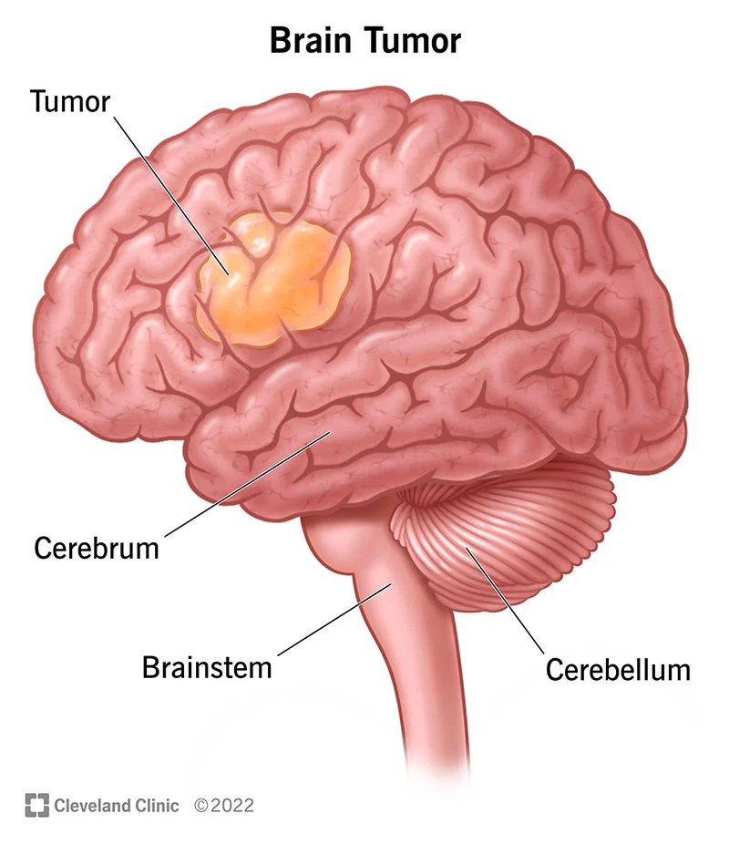
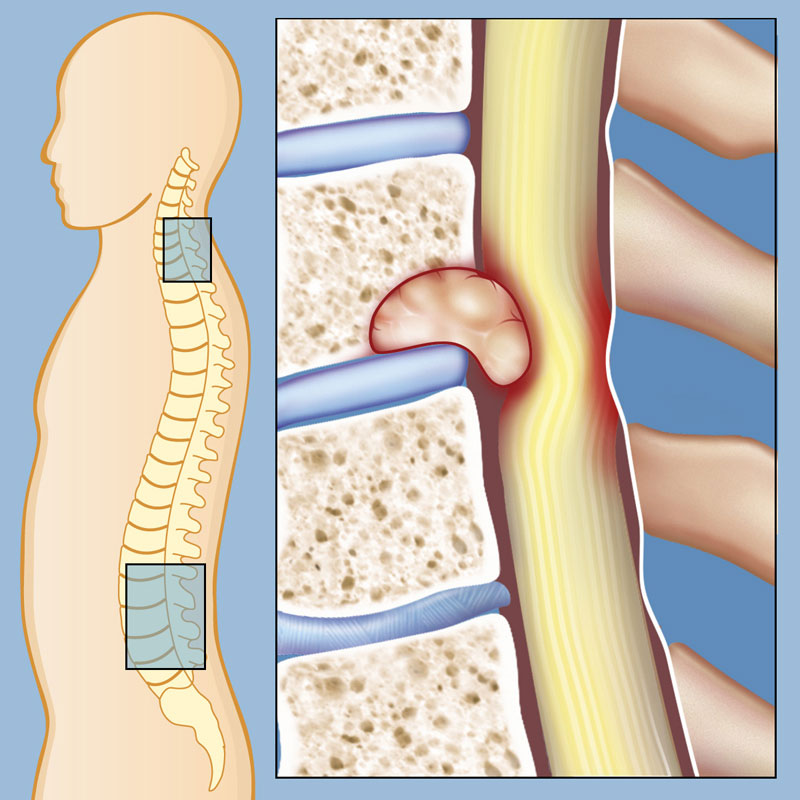
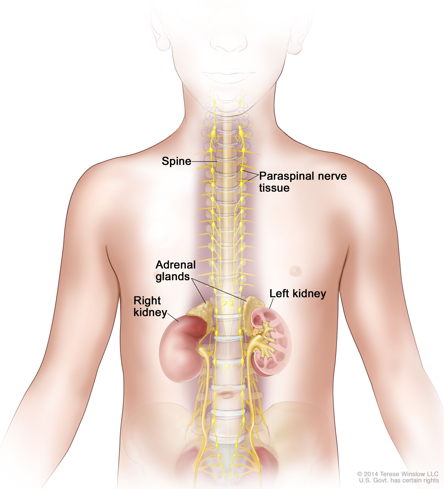
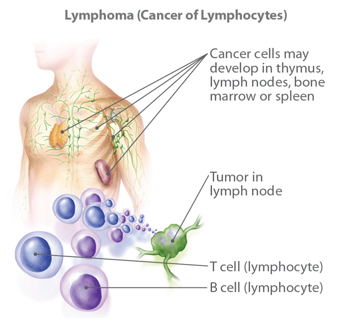
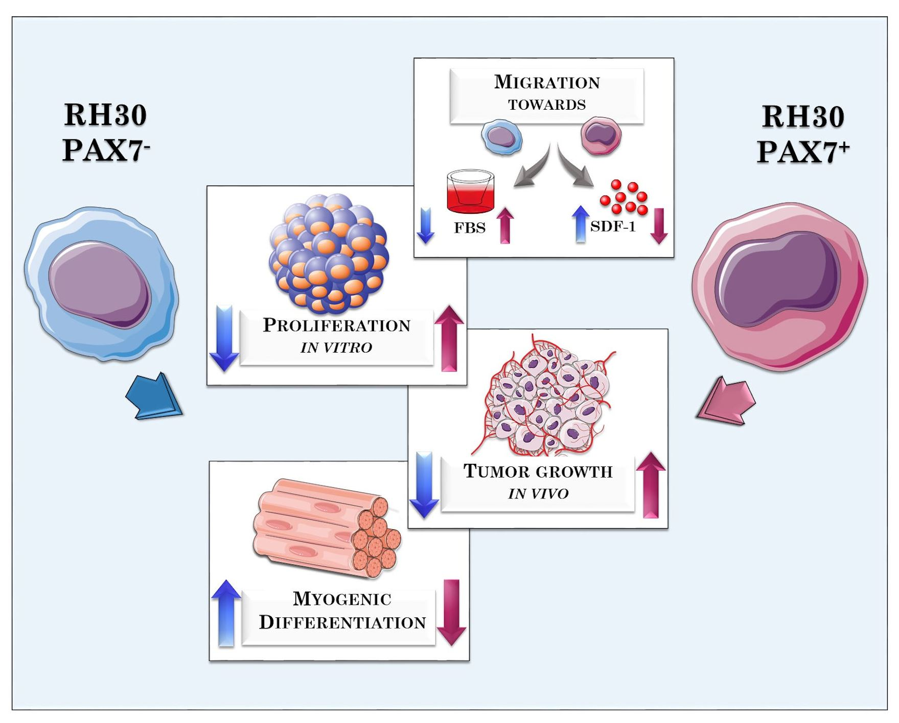

Childhood Cancer (also called pediatric cancer) is a term used to describe cancers which occurs during childhood or adolescence period of a Person. Childhood Cancers are rare and can be different from Adult Cancers in terms of Treatment, Growth and how they Spread.
The following are the common types of Childhood Cancer :-
Leukemia
 ...
Leukemias, which are cancers of the bone marrow and blood, are the most common childhood cancers. They account for near about 28% of all cancers in children. These leukemias can cause bone and joint pain, fatigue, weakness, pale skin, bleeding or bruising, fever, weight loss, and other symptoms.
Brain and spinal cord tumors

 ...
Brain and spinal cord tumors are the second most common cancers in children, making up about 26% of childhood cancers. There are many types of brain and spinal cord tumors, and the treatment and outlook for each is different. Their symptoms include headaches, nausea, vomiting, blurred or double vision, dizziness, seizures, trouble walking or handling objects, etc.
Neuroblastoma
 ...
Neuroblastoma mostly starts in early forms of nerve cells found in a developing embryo. Near about 6% of childhood cancers are neuroblastomas. It is less common in children older than 10 years. The tumor can start anywhere, but it usually starts in the abdomen where it is noticed because of swelling. It can also cause other symptoms, like bone pain and fever.
Lymphomas
 ...
Lymphomas start in immune system cells called lymphocytes. They can also affect the bone marrow and other organs. Symptoms depend on where the cancer starts and can include weight loss, fever, sweats, tiredness (fatigue), and lumps (swollen lymph nodes) under the skin in the neck, armpit, or groin.
Rhabdomyosarcoma
 ...
Rhabdomyosarcoma starts in cells that normally develop into skeletal muscles. This type of cancer can start nearly at any place in the body, including the head and neck, groin, abdomen, pelvis, or in an arm or leg. It may cause pain, swelling, or both. This is the most common type of soft tissue sarcoma in children. It makes up about 3% of childhood cancers.